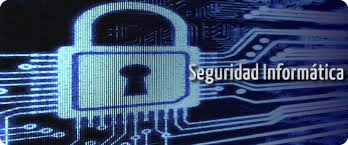

Introduccion a la Seguridad Informatica
La seguridad informática es el área que trata de la protección completa de un sistema informático, es decir, la protección del hardware, del software y de los datos. Para ello existen una serie de estándares, protocolos, métodos, reglas, herramientas y leyes concebidas para minimizar los posibles riesgos. La seguridad informática comprende software, bases de datos, metadatos, archivos y todo lo que una organización considere como información privilegiada o confidencial. Con la seguridad informática buscamos que el sistema informático sea usado únicamente como está previsto y que solo las personas autorizadas puedan acceder y/o modificar la información hasta el límite de sus permisos. El espectacular auge de Internet y de los servicios telemáticos ha hecho que los ordenadores y las redes se conviertan en un elemento cotidiano en nuestras casas y en un instrumento imprescindible en las tareas de las empresas. Hoy en día, las empresas tienen su sistema informático conectado a Internet para que le ayude en su proceso productivo y si se producen fallos de seguridad, las consecuencias pueden ser desastrosas para estas, bien por la pérdida de información o por el mal funcionamiento de los equipos. Con unas buenas políticas de seguridad, tanto físicas como lógicas, conseguiremos que nuestros sistemas sean menos vulnerables a las distintas amenazas, pues nadie puede asegurar que un sistema sea cien por cien seguro, incluso hasta la seguridad de la NASA y del Pentágono han sido violadas por hackers en algún momento. Hay una lucha permanente entre los técnicos protectores de los sistemas informáticos y las personas que buscan rendimientos económicos fáciles, o simplemente su minuto de gloria al superar el reto de asomarse al otro lado de la barrera de protección. Tenemos que intentar lograr un nivel de seguridad razonable y estar preparado para que, cuando se produzcan los ataques, los daños sean los menores posibles y haber sido lo suficientemente precavidos como para realizar copias de seguridad, de esta manera podremos volver a poner en funcionamiento los sistemas en el menor tiempo posible.